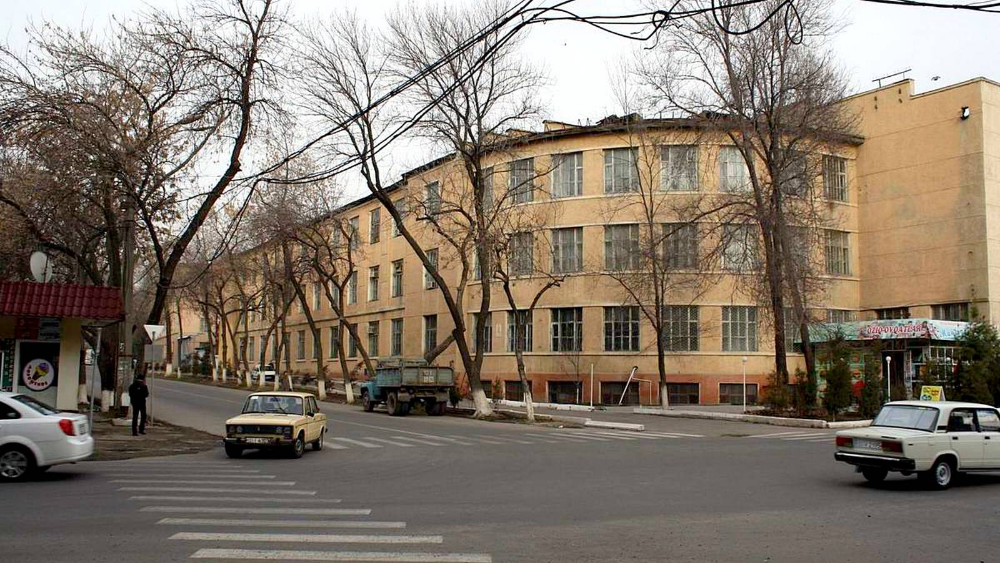

1923 жылғы инженерлік білімнен ұлттық зерттеу университеті мәртебесіне дейінгі жол.
Бастауы
1923 жыл: алғашқы қадамдар
TIIAME тарихы 1923 жылы Түркістан мемлекеттік университетінің техникалық факультетінде инженерлік мелиорация факультеті ашылған кезден басталады. Алғашқы түлектердің қатарында 24 агроном және 16 гидромелиорация инженері болды.
1929 жылы Орта Азия мақта және ирригация политехникалық институты құрылды. 1934 жылы ол Ташкент ирригация және ауыл шаруашылығын механикаландыру инженерлері институтына айналды. 2017 жылы қайта құрылып, 2021 жылы ұлттық зерттеу университеті мәртебесін алды.
Гидромелиорация, суару, мелиорация және ауыл шаруашылығын механикаландыру бойынша ғылыми мектеп университеттің қазіргі білім беру және зерттеу бағыттарының негізі.
TIIAME тарихы 1923 жылы Түркістан мемлекеттік университетінің техникалық факультетінде инженерлік мелиорация факультеті ашылған кезден басталады. Алғашқы түлектердің қатарында 24 агроном және 16 гидромелиорация инженері болды.
Дербес институт және тарихи ғимарат
1929 жылы Орта Азия мақта және ирригация политехникалық институты құрылды. 1934 жылы институт қалыптасып, Ниязбек көшесіндегі арнайы салынған ғимаратқа орналасты.
Ирригация және мелиорация институты
2004 жылы оқу орны Ташкент ирригация және мелиорация институты деп аталды. Кейін білім беру бағыттары мен ғылыми қызметі кеңейді.
Реформалар және ұлттық зерттеу университеті мәртебесі
2017 жылғы жоғары білім реформалары жаңа кезеңді бастады. 2021 жылғы 7 сәуірдегі PQ-42 қаулысымен университетке Ұлттық зерттеу университеті мәртебесі берілді.

1934 жылы пайдалануға берілген тарихи ғимараттың бүгінгі көрінісі. Ресми дереккөз
2025 жылғы 90 жылдық халықаралық конференция мен мерейтойлық іс-шарадан. Ресми дереккөз2025 жылғы 90 жылдық халықаралық конференция мен мерейтойлық іс-шарадан. Ресми дереккөз2025 жылғы 90 жылдық халықаралық конференция мен мерейтойлық іс-шарадан. Ресми дереккөз
TIIAME болашағы
Ғылымға, цифрлық білімге, халықаралық әріптестікке және су қауіпсіздігіне бағытталған жаңа кезең.
Зерттеу
Ұлттық зерттеу университеті
2021 жылғы PQ-42 қаулысы университетті инновация мен цифрландыруға негізделген ұлттық зерттеу орны ретінде дамытуды белгіледі. Міндеттерге инженерлік білімді, зерттеуді және өндіріс байланысын нығайту кіреді.
Цифрлық университет платформасы, оқу зертханаларын жаңарту, IT орталығы және жасанды интеллект бастамалары білім мен зерттеу мүмкіндіктерін кеңейтуге бағытталған.
Университет мәліметінше, Алматыдағы халықаралық филиал 2024 жылы ашылды, ал Бішкекте филиал ашу 2028 жылға жоспарланған. Әріптестік бірлескен білім мен зерттеуді дамытады.
Университет өмірі, ғылыми ынтымақтастық және елдегі ірі жобалар.
Білім және ғылым
Президенттің немересіне жазған хатындағы өмірлік өсиеттер студенттерге жеткізілуде
TIIAME ұлттық зерттеу университетінің факультеттерінде ректордың қатысуымен Президенттің немересі Шавкатбекке жолдаған хатындағы өмірлік сабақтарды студенттерге түсіндіретін кездесулер өтуде.
Ректор хаттағы ойлардың мәнін өмірлік мысалдармен түсіндіріп, білім алу, үздіксіз іздену, заманауи технологиялар мен жасанды интеллектіні орынды пайдалану, шет тілдерін үйрену және ұлттық құндылықтарға адалдық мәселелеріне тоқталады.
Әр минутты бағалау, нақты мақсат қою және Отанға пайда келтіру туралы өсиеттер жастардың жауапкершілігін, болашаққа сенімін нығайтуға бағытталған.
Ректор кездесуде сөз сөйлеп тұрКездесуге қатысқан студенттерКездесуге қатысушы
Ұлттық зерттеу университеті суару, мелиорация және гидротехника мамандарын даярлайды. 2026 жылы университет тобы Ташкент облысында су үнемдейтін жабдықтар мен құбырларды орнату жұмыстарын зерттеп, ұсыным берді.
ӨзА-ның 2026 жылғы 10 наурыздағы дерегіне сүйенсек, университетте 11 мыңнан астам студент оқыған, 7 факультет, 37 кафедра және 38 білім беру бағыты болған. O‘zA
Президенттің PQ-42 қаулысымен институт ұлттық зерттеу университеті мәртебесін алды. Қаулымен Іргелі және қолданбалы зерттеулер институтын ашу мақұлданып, оқу зертханаларын жаңарту бағдарламасы бекітілді.
Президент бастамасымен TIIAME-де Су мамандары мектебі ашылды. Ол фермерлер мен су шаруашылығы мамандарына су үнемдеу технологияларын іс жүзінде қолдануды үйретеді.
Шавкат Мирзиёев пен Қазақстан Президенті Қасым-Жомарт Тоқаев TIIAME-нің Алматыдағы филиалын ашты. Филиал сұранысқа ие техникалық бағыттар бойынша маман даярлауға арналған.
Орталық Азия мемлекеттері басшыларының кездесуінде Президент су шаруашылығы мамандарын даярлау үшін TIIAME жанынан өңірлік құзыреттер орталығын құруды ұсынды.
Президент инженерлік білім беру жөніндегі ұсыныстарды қарады. Дуалды оқыту үшін аптасына төрт күн теория және екі күн ақылы тәжірибе ұсынылды. Су дипломатиясы магистратурасын кеңейту және грант орындарын көбейту ұсынысы мақұлданды.
Президенттің PQ-122 қаулысында TIIAME-де дуалды оқытуды енгізу, «Цифрлық университет» платформасын құру және 2026–2028 жылдары оқу зертханаларын жаңарту көзделген.
Төрт қабатты IT орталығы 2025 жылғы 10 мамырда ашылды. Мұнда бағдарламалау және оқыту бөлмелері, тіркеуші кеңсесі және су ресурстарын цифрлық басқаруға арналған бағдарламалық қамтылым әзірлейтін бөлім бар. Ресми дереккөз
ӨзА хабарлағандай, 2025 жылғы 15 желтоқсанда Президентке 200 орындық IT орталығы, цифрлық кітапхана және тіркеуші кеңсесі туралы мәлімет берілді. Президент TIIAME-ді әлемнің үздік 300 университетінің қатарына қосу үшін нақты шаралар әзірлеуді тапсырды. O‘zA
IT орталығының ғимаратыАшылу салтанатында лента қиюОрталықтың бағдарламалау бөлмесіЫнтымақтастық меморандумы
1981 жылы TIIAME-ді инженер-механик мамандығы бойынша бітірген. Институтта ғылыми қызметкер, оқытушы және проректор болып жұмыс істеген. 2016 жылы Президент болып сайланды, 2023 жылғы сайлаудан кейін 14 шілдеде қызметіне кірісті.
2025–2028 жылдары ирригацияны дамытуПҚ–250 бағдарламасы каналдар мен су нысандарын жаңартуды, басқаруды цифрландыруды және су үнемдеу технологияларын кеңейтуді көздейді.
1957 жылы 24 шілдеде Жызақ облысының Заамин ауданында туған. Техника ғылымдарының кандидаты, доцент. 2003 жылы Өзбекстанның премьер-министрі болып бекітілді.
Президент бастамасымен салынған, жаңғыртылған немесе оның қатысуымен іске қосылған кейбір нысандар.
Жаңа Ташкент
Жаңа Ташкенттегі жаңа нысандар
2026 жылғы 12 қазанда Президенттің қатысуымен жеті нысан ашылды. Олардың қатарында мектеп, «Сохил» саябағы, электр қосалқы станциясы және тригенерация станциясы бар.
2021 жылы Президентке таныстырылған жоба аясында 246 км магистральдық және ішкі желі салынды. 2026 жылғы ақпан есебіне сәйкес, су Терміз бен он ауданға жеткізіліп жатыр.
Мемлекеттік-жекеменшік әріптестік аясында үнемді сорғылар орнатылды. Станция 815 гектар жерді суарады. Президент 2025 жылы бұл тәжірибені кеңейтуді тапсырды.